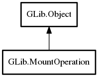

MountOperation
Object Hierarchy:

Description:
public class MountOperation :
Object
MountOperation provides a mechanism for interacting with the user.
It can be used for authenticating mountable operations, such as loop mounting files, hard drive partitions or server locations. It can
also be used to ask the user questions or show a list of applications preventing unmount or eject operations from completing.
Note that MountOperation is used for more than just Mount
objects – for example it is also used in start and
stop.
Users should instantiate a subclass of this that implements all the various callbacks to show the required dialogs, such as
GtkMountOperation. If no user interaction is desired (for example when automounting filesystems at login time), usually
null can be passed, see each method taking a MountOperation for
details.
Content:
Properties:
- public bool anonymous { set; get; }
Whether to use an anonymous user when authenticating.
- public int choice { set; get; }
The index of the user's choice when a question is asked during the
mount operation.
- public string domain { set; get; }
The domain to use for the mount operation.
- public string password { set; get; }
The password that is used for authentication when carrying out the
mount operation.
- public PasswordSave password_save { set; get; }
Determines if and how the password information should be saved.
- public string username { set; get; }
The user name that is used for authentication when carrying out the
mount operation.
Creation methods:
Methods:
Signals:
- public virtual signal void aborted ()
Emitted by the backend when e.
- public virtual signal void ask_password (string message, string default_user, string default_domain, AskPasswordFlags flags)
Emitted when a mount operation asks the user for a password.
- public virtual signal void ask_question (string message, string[] choices)
Emitted when asking the user a question and gives a list of choices
for the user to choose from.
- public virtual signal void reply (MountOperationResult result)
Emitted when the user has replied to the mount operation.
- public signal void show_processes (string message, Array<Pid> processes, string[] choices)
Emitted when one or more processes are blocking an operation e.
- public virtual signal void show_unmount_progress (string message, int64 time_left, int64 bytes_left)
Emitted when an unmount operation has been busy for more than some
time (typically 1.5 seconds).
Inherited Members:
All known members inherited from class GLib.Object